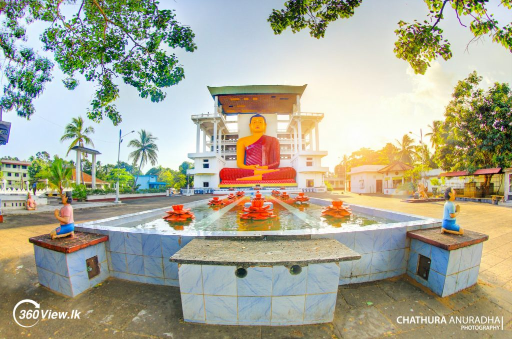

About Weherahena Temple

Weherahena ( Veherahena) is popular temple among the buddhist pilgrims. Although
there is nothing of historical significance, the story of the temple is quite
interesting. In addition, the temple is said be the largest and the first tunnel temple
in the world.
The temple is famous for its sacred Bo-tree and a huge Buddha statue. Apart from this,
the temple also has a tunnel that features the life of Buddha (Jathaka stories) with
the help of frescoes.
Weherahena Temple is an important religious site for Buddhists in Sri Lanka and visitors
worldwide. The temple is considered a place of worship, meditation, and learning. In
addition, the temple allows visitors to experience a Buddhist temple's peaceful and
serene environment and learn about the Buddhist way of life.